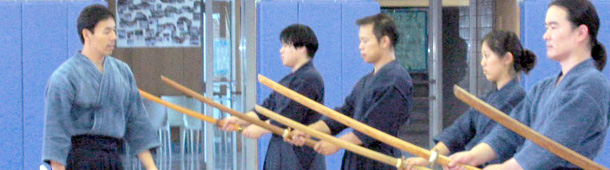
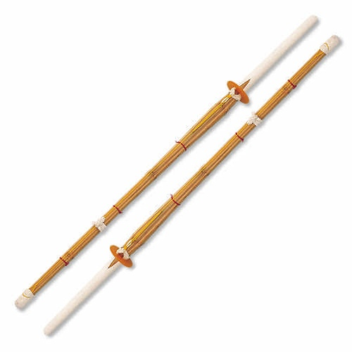
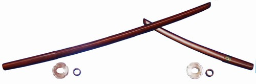
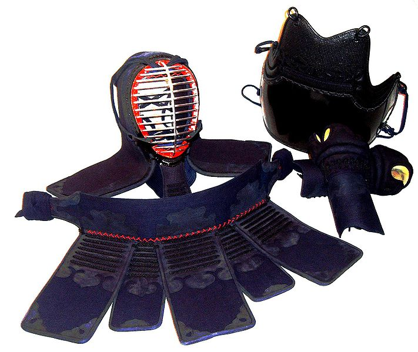

|
||
|  | ||
| Home Events Members News Photos Links | ||
Practice Information
*Please note, practice cancellations will be posted on our Facebook page.
Location
Boston Higashi School Gym
800 N Main Street
Randolph MA 02368
Time
Sundays 1:30pm - 2:30pm (all levels, ages 5-10+)
Sundays 2:30pm - 5:30pm (all levels, ages 11+)
Wednesdays 7:00PM - 8:30PM (bogu students only)
Fees
Annual federation fee $60 (18 and up), $45 (otherwise)
Annual insurance fee $25
Three month membership fee for individual $45, for family $75
Equipment
All students are responsible for providing their own practice equipment. Please respect your fellow kendoka by keeping your equipment in a satisfactory condition.
Beginners only require a shinai and loose fitting workout clothes.
Shinai

Shinai (bamboo sword for regular practice)
Kendo Uniform

-- Keikogi (kimono-like jacket)
-- Hakama (loose fitting trousers)
Bokuto

Bokuto (a set of wooden swords for Kata, Japanese Kendo forms, practice)
Kendo Bogu

-- Men (Helmet): head, face, and shoulder protector
-- Do (Chest plate): torso protector
-- Kote (Mittens): hand and forearm protectors
-- Tare (Waist Belt): groin, waist, and thigh protector
Directions to Boston Higashi School
<From North>
- Take I-93 South.
- Exit 5A for Rt-28 South toward Randolph.
- Turn slight right onto Rt-28 (N. Main Street).
- (See more directions below.)
<From South>
- Take I-95 North.
- Merge onto I-93 North via Exit 12 on the left toward Boston.
- Exit 5A for Rt-28 South toward Randolph.
- Turn slight right onto Rt-28 (N. Main Street).
- (See more directions below.)
<From Rt-28>
Continue on Rt-28 (N. Main Street). After several blocks, you'll see "Boston Higashi School" sign on the right. Turn right where you see the second "Boston Higashi School" sign to come into campus. Then follow the "Main Parking" sign, and turn left to go to the parking lot near gym.
<See map>
Copyright © 2007-2013 Boston Shufukai Kendo. All rights reserved. |